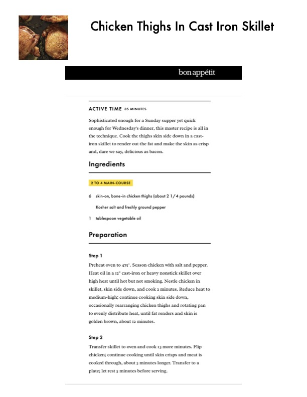

Chicken Thighs In Cast Iron Skillet

Original cookbook page 152
Sophisticated enough for a Sunday supper yet quick enough for Wednesday's dinner, this master recipe is all in the technique. Cook the thighs skin side down in a cast-iron skillet to render out the fat and make the skin as crisp and, dare we say, delicious as bacon.
Prep: 5 minutes • Cook: 35 minutes • Total: 40 minutes
Ingredients
- 6 skin-on, bone-in chicken thighs (about 2¼ pounds)
- Kosher salt and freshly ground pepper
- 1 tablespoon vegetable oil
Instructions
- Preheat oven to 475°F. Season chicken with salt and pepper.
- Heat oil in a 12" cast-iron or heavy nonstick skillet over high heat until hot but not smoking.
- Nestle chicken in skillet, skin side down, and cook 2 minutes.
- Reduce heat to medium-high; continue cooking skin side down, occasionally rearranging chicken thighs and rotating pan to evenly distribute heat, until fat renders and skin is golden brown, about 12 minutes.
- Transfer skillet to oven and cook 13 more minutes.
- Flip chicken; continue cooking until skin crisps and meat is cooked through, about 5 minutes longer.
- Transfer to a plate; let rest 5 minutes before serving.
📝 Recipe Notes
COOKING TIP: If using smaller thighs, they cook faster and can become overdone. Reduce skillet cooking time if thighs are smaller than 2¼ pounds total. The key is crispy skin from proper fat rendering. Combined recipe from pages 152-153.
Recipe #152 from collection